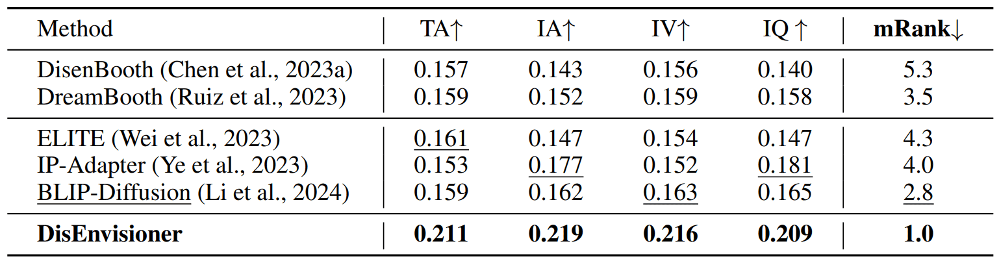

In the realm of image generation, creating customized images from visual prompt with additional textual instruction emerges as a promising endeavor. However, existing methods, both tuning-based and tuning-free, struggle with interpreting the subject-essential attributes from the visual prompt. This leads to subject-irrelevant attributes infiltrating the generation process, ultimately compromising the personalization quality in both editability and ID preservation.
In this paper, we present DisEnvisioner, a novel approach for effectively extracting and enriching the subject-essential features while filtering out -irrelevant information, enabling exceptional customization performance, in a tuning-free manner and using only a single image. Specifically, the feature of the subject and other irrelevant components are effectively separated into distinctive visual tokens, enabling a much more accurate customization. Aiming to further improving the ID consistency, we enrich the disentangled features, sculpting them into more granular representations.
Experiments demonstrate the superiority of our approach over existing methods in instruction response (editability), ID consistency, inference speed, and the overall image quality, highlighting the effectiveness and efficiency of DisEnvisioner.
We compare DisEnvisioner and popular existing methods under single-image setting. It can be observed that irrelevant factors, such as the subject's posture (▲) and background (⬤), can affect the customization quality and result in poor editability (◼) or poor ID consistency (◆). For instance, BLIP-Diffusion falls in both two factors, leading to poor editability and ID consistency. We denotes its performance as ▲⬤→◼◆ (the symbols without color filling, such as △, indicates that the customization is not affected by subject's posture, and ◻ indicates good editability). We also try to use masks to filter out irrelevant information for these methods. However, the harmful influence of subject's posture still exists. And solid background colors (e.g., white or black) also can harmfully impact the customization quality, leading to textureless backgrounds.
DisEnvisioner mainly consists of two key components: DisVisioner and EnVisioner. During inference, subject-irrelevant features are discarded to avoid harmful disturbances.
DisEnvisioner is structured into two stages:
(a) DisVisioner firstly disentangles the features of the subject and other irrelevant components by aggregating the image feature $\boldsymbol{\upsilon}_{\text{ref}}$ into two distinct and orthogonal tokens $\boldsymbol{v}_{\text{d}}$.
(b) EnVisioner subsequently refines and sculpts the disentangled features $\mathcal V_{\text{d}}$ into more granular representations to produce high ID-consistency images with the input image $\mathbf{x}_{\text{ref}}$, and can improve the overall visual quality of the image.
Only colored modules (orange and blue) are trainable. The whole (nearly) Diffusion model is fixed.
The evaluation metrics include CLIP text alignment for assessing editability (C-T), CLIP and DINO image-alignment for ID-consistency (C-I, D-I), internal variance to demonstrate the resistance to subject-irrelevant factors (IV), and inference time for efficiency (T).
DisEnvisioner demonstrates better comprehensive performance than other methods. Top results are in bold; second-best are underlined. $^\S$For equity, we consider C-I and D-I as two sub-indicators of image-alignment, the rank of each has a weight of $0.5$ in mRank calculation, while the ranks of all other metrics have a weight of $1.0$.
Participants grade each method given the generation outputs across 3 images of the same subject in each round. There are 5 rounds in total. The metrics are text alignment (TA), subject identity alignment (IA), internal variance of those 3 customized images (IV), and image quality (IQ). A total of 69 users participated.
DisEnvisioner excels in editability and ID-consistency. Notably, the animal's posture and its surroundings do not affect customization, showcasing our strength in capturing subject-essential features
Besides offering better editability, DisEnvisioner also excels in preserving accurate subject identity. Moreover, images generated by DisEnvisioner are minimally affected by subject-irrelevant elements of reference images like the surroundings.
Please refer to our paper linked above for more technical details :)
@article{he2024disenvisioner,
title={DisEnvisioner: Disentangled and Enriched Visual Prompt for Customized Image Generation},
author={Jing He and Haodong Li and Yongzhe Hu and Guibao Shen and Yingjie Cai and Weichao Qiu and Ying-Cong Chen},
journal={arXiv preprint arXiv:2410.02067},
year={2024}
}